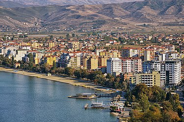
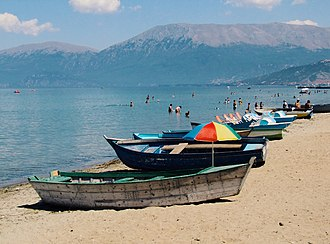
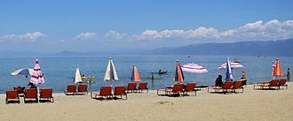

Pogradec is the eleventh most populous city of the Republic of Albania and the capital of the eponymous municipality. It is located on a narrow plain between two mountain chains along the southwestern banks of the Lake of Ohrid. Its climate is profoundly influenced by a seasonal Mediterranean and Continental climate. Pogradec and its surroundings were listed by UNESCO as a World Heritage Site as part of the natural and cultural heritage of the region of Ohrid. Nevertheless, the Illyrian Royal Tombs in the adjacent unit of Proptisht are on the Albanian tentative list for becoming a World Heritage Site.
The name of the town is Eastern South Slavic in origin. Pogradec comes from Po(d) (under/beneath) and Gradec (town, city, castle or fortified settlement) and means literally "under the city". This is a reference to the ancient Illyrian settlement, which was situated on a hill above the contemporary region of Pogradec. In the medieval period during the Ottoman occupation, the town was known as İstarova or İstarye during Ottoman rule and was bounded to as kaza center in Görice Sanjak of Manastır Vilayet before Balkan Wars.
Pogradec Beach is a beach located near the city of Pogradec, on the shores of Lake Ohrid and as such is the largest lake beach in Albania. Pogradec beach has a length of 8 km, starting from the city pier to the eastern edge of Tushemisht. In reality, Pogradec Beach is divided into two parts: the city beach which stretches along the promenade "1 Maji" and the part of Tushemisht and Lin. The city beach consists of fine to medium sand, while Tushemisht beach has thicker sand. In Pogradec Beach there are private and public beaches very suitable for family, day and mountain tourism. Nearby is the Drilon Park with lush vegetation and characteristic springs which flow into the lakes. The area is generally frequented by local and foreign vacationers.
Thank you for reading this article! Leave a like or dislike.